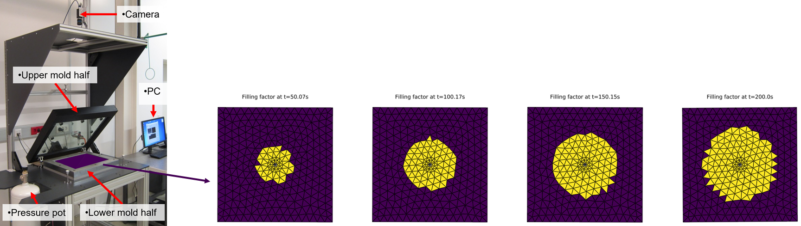

LCMsim
Resin Transfer Moulding (RTM) is a manufacturing process for producing thin-walled fiber reinforced polymer composites where dry fibers are placed inside a mould and resin is injected under pressure into the fibrous preform. In contrast to RTM, in Vaccum-Assisted Resin Infusion (VARI) vacuum pulls resin through the preform on a single-sided tool with vacuum bagging. During mold design for both RTM and VARI, filling simulations can study different manufacturing concepts (i.e. placement of inlet ports and vents) to guarantee complete filling of the part and avoid air entrapment where flow fronts converge.
In all of the liquid composite manufacturing (LCM) technologies dry fiber preforms without resin are placed into a mold and the mold is closed. Resin then enters into the mold until the preform is fully wetted with resin. After the resin is cured the mold is opened and the part is extracted. In RTM resin is injected into a matched mold under pressure which gives excellent surface finishes on both sides and high fiber volume fractions (55-65 \%) can be obtained. In VARI, vacuum pulls liquid resin into a preform which lies on a single-sided tool normally used with a vacuum bagging which results on an excellent surface only on the tool side and only a lower fiber volume fraction (45-55 \%) can be obtained.
From a modeling point of view there are some differences between RTM and VARI. In RTM, the mold walls are considered rigid. In VARI, the prefom is placed on the mold and encapsulated with a plastic bag. Optionally, a flow distribution medium is placed on to top of the preform. The flexible plastic bag increases the cavity thickness as the fluid pressure increases inside the cavity during injection. The increased thickness results in an increased porosity and an increased permeability. For both RTM and VARI, the preform is stationary during injection.
During pre-processing the physical domain (i.e. the mold cavity) must be transfered to a numerical domain (i.e. the mesh), initial and boundary conditions must be assigned to the cells of the mesh. The simulation is started with a set of process parameters and a set of material parameters. The solver calculates how the values of the physical quantities in the cells change in the course of the filling. Different physical models of the filling can be implemented in the solver. The physical models have to describe all relevant issues of the filling process. During post-processing the resin flow front at different time instances must be visualized as contour plots.
Requried inputs for filling simulations are the mold cavity geometry, permeability, porosity and thickness values which describe the fibrous preform regions, flow properties like resin viscosity, initial cavity pressure and injection pressure. For flow through porous media, permeability and porosity must be determined before performing simulations.
The In-plane permeability for constant cavity height is characterized experimentally from linear or radial flow experiments. During the actual flow experiment, the flow front location is tracked over time and the entries of the in-plane permeability tensor are finally computed according to specifically developed mathematical algorithms. In order to find the dependence of the permeability from the porosity (e.g. with the Carman-Kozeny relation), measurements with different porosity levels are performed. If the cavity heigh changes in VARI, also the porosity and consequently the permeability change. The through-the-thickness permeablitiy is only important for VARI with flow distribution medium and not considered here.
For constant cavity height, the porosity can be calculated from cavity thickness $t$, mass density $\rho_{f}$ and areal weight $A_f$ of the preform material as $\varepsilon=t /(A_f/\rho_f)$. For variable cavity height, which is typical for VARI, porosity and permeability change. At least two pairs of (cavity thickness, compaction pressure) must be given, typically for compaction pressure equal to vacuum and for an intermediate value between vacuum and environmental pressure.
Initially the porous cavity is either evacuated or filled with air (air density according to cavity pressure) and pressurized resin is injected into the fibrous preform or vacuum pulls resin through the fibrous preform.
A compressible continuity equation for the mixture density, an equation-of-state which describes the pressure build-up with increasing mixture density and a momentum equation with dynamic viscosity of the resin in the Darcy term describe the fluid flow. For tracking the flow front a fluid fraction is calculated.
In order to numerically solve the flow model with the equation of state from Figure, the computational domain (time and space) is discretized. Discretization of the governing equations on an unstructured mesh follows the ideas presented in .
The temporal domain (i.e. the simulation time) is split into a finite number of time steps where values for the physical quantities on the spatial domain are calculated in a time-marching manner. An explicit method with adaptive time stepping is used.
The spatial domain is defined on the cavity's mid-surface and described by a shell mesh in a format similar to the NASTRAN bulk data format . The mid-surface model can be curved and cells can have edges where more than two cells are connected to each other such as for handling T-junctions. The injection gate is part of the computational domain and injection pressure and resin fraction one is assigned to the cells belonging to this region. Vents can be specified optionally. If no vents are specified (similar to software myRTM) the simulated filling is not influenced as long as the flow front does not reach the fictitious vent position. Initial pressure is input, initial velocity is zero and initial resin fraction is zero in all cells except in those belonging to the injection gate.
For discretizing the equations on the shell mesh of the part's mid-surface it is assumed that the geometry was locally flat there. The neighbouring cells are rotated about the common edges to lie in the plane of the considered cell and the velocity vectors of the neighbouring cells must be transformed into the same coordinate system.
The solver section (which is the relevant section if a different physical model is implemented) consists of a for-loop over all interior and wall cells inside a while-loop for the time evolution. For every interior and wall cell, the following steps are performed: First, the pressure and filling fraction gradients are evaluated. Second, the time evolution for new mass density, $x$- and $y$-velocities with the discretized continuum, $x$- and $y$-momentum equations in the cell coordinate systems is performed. Third, the pressure is evaluated according to the equation of state. Forth, the filling fraction is evaluated. Boundary conditions need not be updated since in the inlet and outlet cells pressure and mass density remain unchanged and the velocity values at the cell boundaries are evaluated in the numerical flux evaluation.
Find more background information in the paper C. Obertscheider, E. Fauster and S. Stieber, Experimental validation of a new adaptable LCM mold filling software